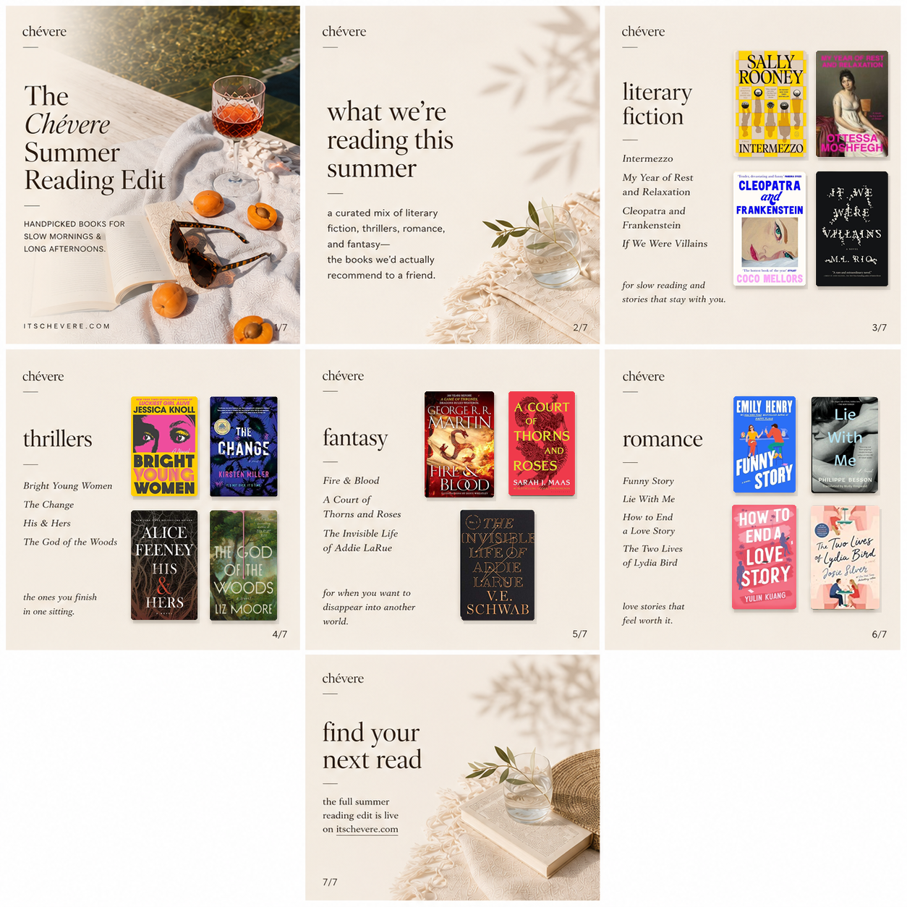
The books we’d recommend to a friend—from literary favorites and addictive thrillers to romance, fantasy, and a few unforgettable standouts.
There is no shortage of great books to choose from, which can make deciding what to read next feel surprisingly difficult. Between BookTok favorites, literary award contenders, and the novel that's been sitting on your nightstand for months, the list only seems to get longer.
At Chévere, we believe the best recommendations come from the books that linger long after you've finished them. The ones you immediately want to hand to a friend, annotate in the margins, or find yourself thinking about weeks later. So instead of chasing every new release, we've put together a collection of novels that are genuinely worth your time for the rest of 2026.
Whether you're packing a book for a summer getaway, settling into a cozy fall weekend, or simply looking for your next great read, consider this your starting point.
Literary Fiction
These are the novels that reward slow reading. Rich characters, thoughtful writing, and stories that stay with you long after the final page.
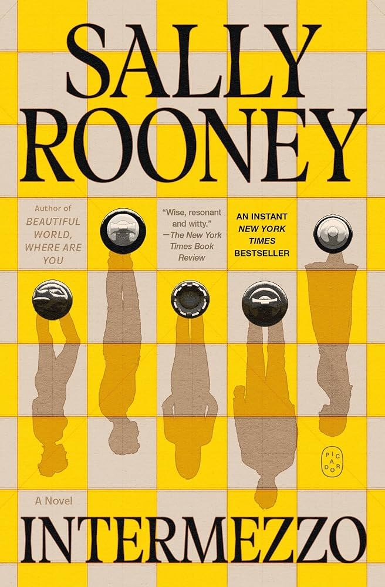
Intermezzo
Rooney returns with another deeply human story, exploring grief, family, love, and the complicated dynamics between two brothers navigating life after loss. Like her previous novels, Intermezzo is quiet in all the right ways, asking readers to pay attention to the moments that often go unnoticed.
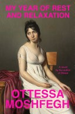
My Year of Rest and Relaxation
A modern literary classic that follows a young woman attempting to sleep through an entire year in an effort to escape herself and the world around her. Equal parts dark, funny, and unsettling, it's one of those books that sparks conversation every time someone brings it up.
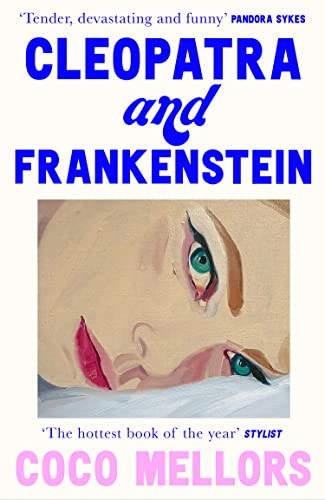
Cleopatra and Frankenstein
Set in New York City, this novel follows a whirlwind marriage between two people trying to find themselves while navigating the expectations of love, friendship, family, and adulthood. Beautifully written and emotionally layered, it's a favorite for readers who enjoy character-driven fiction.
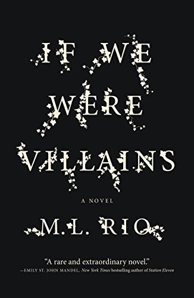
If We Were Villains
Part murder mystery and part Shakespearean drama, this cult favorite follows a group of elite theater students whose lives begin to imitate the tragedies they perform on stage. If you love dark academia, this one deserves a place at the top of your list.
Thrillers
For the nights when “just one more chapter” somehow turns into finishing the entire book.
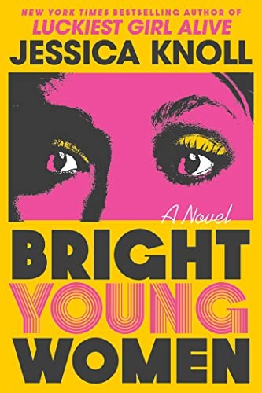
Bright Young Women
Inspired by the crimes of Ted Bundy, Knoll shifts the focus away from the killer and toward the women whose lives were forever changed. More than a thriller, it's a powerful story about survival, resilience, and reclaiming the narrative.
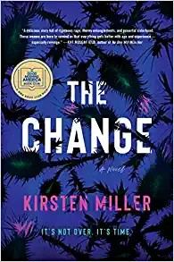
The Change
Imagine a thriller with a touch of magic, a feminist revenge story, and a mystery all rolled into one. Three women discover extraordinary abilities just as a series of suspicious deaths rocks their coastal town. Unexpected, empowering, and wildly entertaining.
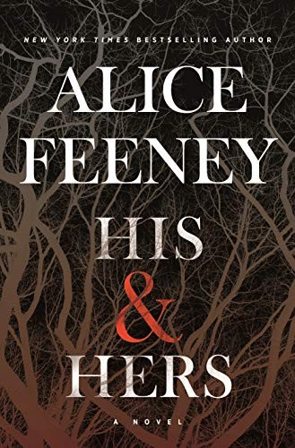
His & Hers
When a murder investigation unfolds through two unreliable narrators, every chapter raises a new question. Twisty, addictive, and impossible to predict, it's exactly what a psychological thriller should be.
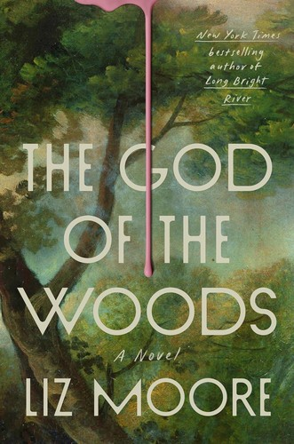
The God of the Woods
One of the most talked-about mysteries in recent years, Liz Moore's atmospheric novel follows the disappearance of a teenage girl at a prestigious summer camp. Family secrets, wealth, privilege, and a haunting setting make this one nearly impossible to put down.
Fantasy
Whether you're revisiting old favorites or discovering a new world for the first time, these books make reality feel a little less interesting.
Fire & Blood
Already obsessed with House of the Dragon? This is where it all begins. The history of House Targaryen is filled with dragons, betrayals, political rivalries, and enough family drama to make every episode even better.
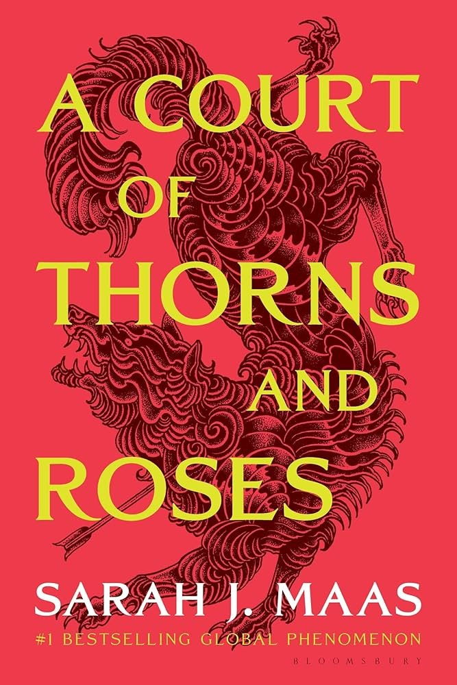
A Court of Thorns and Roses
One of the defining fantasy series of the last decade for a reason. Romance, adventure, unforgettable characters, and a world you'll want to keep returning to. If you're late to the ACOTAR phenomenon, there's still plenty of time to catch up.
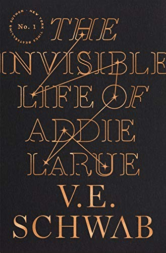
The Invisible Life of Addie LaRue
A woman makes a bargain that grants her immortality—but at the cost of being forgotten by everyone she meets. Romantic, beautifully written, and quietly magical, it's a story about art, memory, and what it means to leave a lasting mark.
Romance
Love stories that feel honest, hopeful, heartbreaking, and worth rooting for.
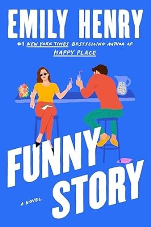
Funny Story
Emily Henry continues to prove why she's one of today's most beloved romance writers. Equal parts witty and heartfelt, this novel delivers memorable characters, genuine chemistry, and the kind of emotional payoff that makes you want to start it all over again.
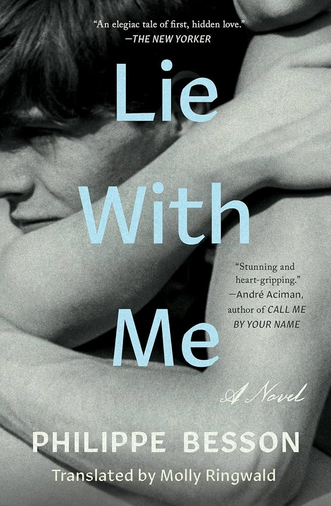
Lie With Me
A beautifully understated novel about first love, memory, and the relationships that shape us forever. It's short enough to finish in a weekend but powerful enough to stay with you much longer.
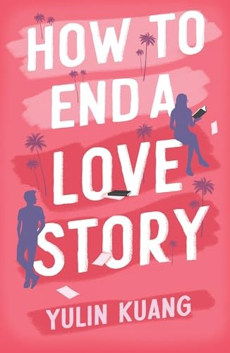
How to End a Love Story
Kuang's debut blends romance with grief, healing, and second chances. Thoughtful, funny, and emotionally rich, it's one of the strongest contemporary romances to pick up this year.
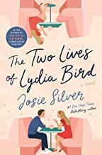
The Two Lives of Lydia Bird
What if you could continue living the life you lost while still trying to move forward? Josie Silver delivers an emotional story about grief, hope, and learning that loving someone doesn't always mean holding on forever.
Chévere Recommends
Some books don't fit neatly into a single category—they're simply stories we think everyone should experience at least once.
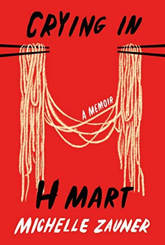
Crying in H Mart
A deeply moving memoir exploring grief, identity, family, and the powerful connection between food and memory.
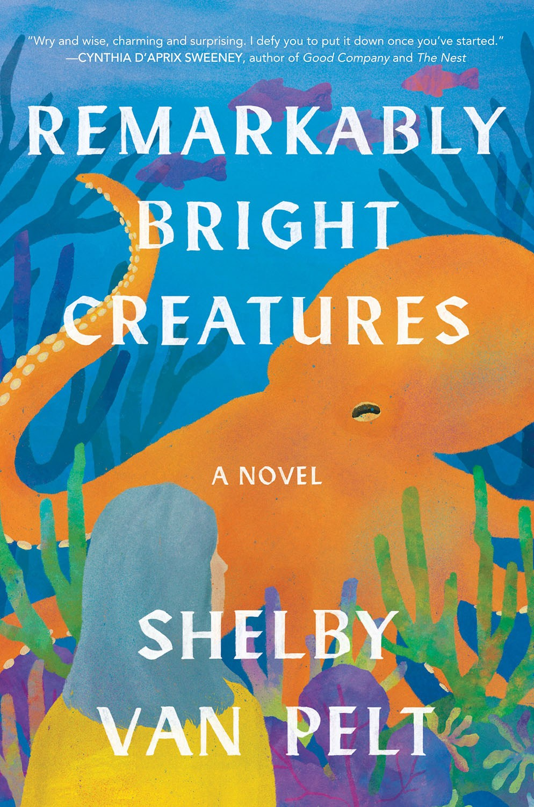
Remarkably Bright Creatures
Warm, hopeful, and quietly charming, this novel reminds us that healing often comes from the most unexpected places—including an exceptionally observant octopus.
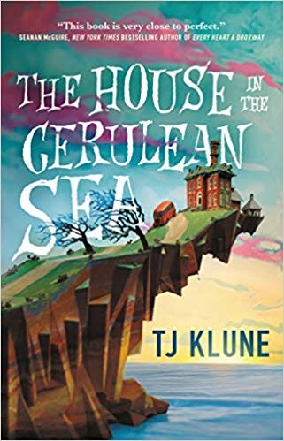
The House in the Cerulean Sea
A cozy fantasy about found family, kindness, and embracing what makes people different. Comforting in the very best way.
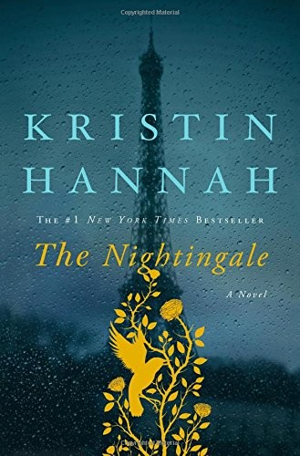
The Nightingale
An unforgettable historical novel about two sisters navigating occupied France during World War II. Emotional, inspiring, and impossible to forget.
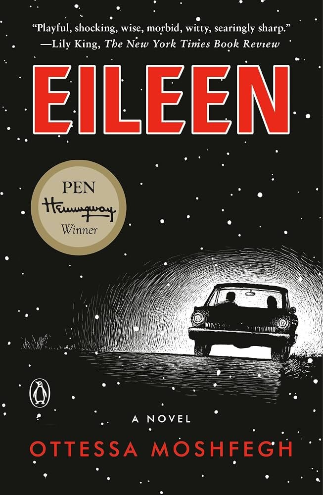
Eileen
Strange, unsettling, and brilliantly written, Eileen isn't always comfortable—but that's exactly what makes it so compelling.
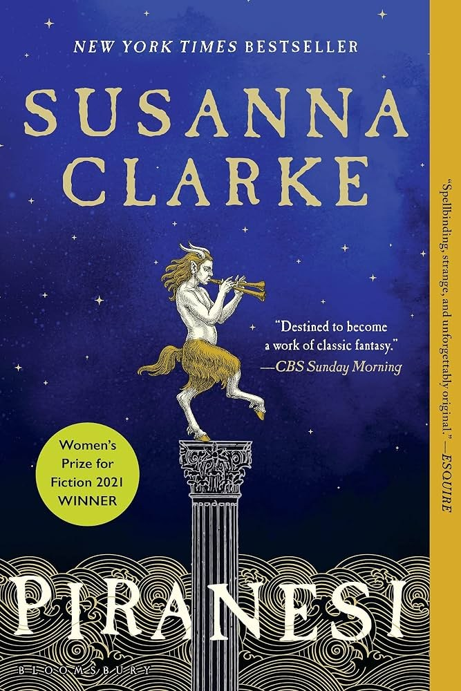
Piranesi
Unlike anything else you'll read this year, Piranesi unfolds inside a mysterious labyrinth where beauty, loneliness, and imagination collide.
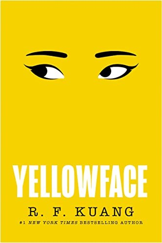
Yellowface
Sharp, funny, and uncomfortably relevant, Yellowface takes aim at publishing, social media, cultural appropriation, and the stories we choose to tell.
Final Chapter
The best books aren't always the newest ones—they're the ones that stay with you. The stories you recommend without hesitation, lend to friends, or find yourself revisiting years later.
If even one of these titles earns a spot on your bookshelf before the end of the year, we'd call that a successful reading season.
And if there's a book you think belongs on every must-read list, let us know. We're always looking for our next favorite.